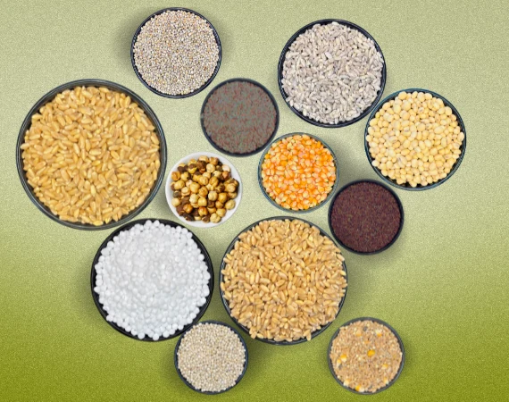

Grain-first choices
Explore familiar staples and traditional grains with clear product information.
From our chakki to your kitchen
Choose your favourite grains, select your preferred texture and enjoy flour prepared with care for everyday meals.

Why Fresh Chakki
A simple, transparent way to choose grains and plan your flour needs.
Explore familiar staples and traditional grains with clear product information.
Choose fine, medium or coarse grinding based on how you cook.
Plan one-time orders or recurring deliveries around your household routine.

A better pantry routine
Browse grain varieties, select your pack size and grinding preference, then choose a delivery plan that works for you.
Fresh From Today's Grind
Total pantry transparency. Check what grain is being slow-milled on our natural granite stones right now and verify same-day delivery slots for your neighborhood.
Enter your area PIN code to check today's live stone-milling cutoff and doorstep arrival window.
The Sensory Test
Commercial factory flour often sits in warehouses for 3 to 6 months treated with chemical conditioners. Discover the tangible culinary differences when flour is milled just hours before reaching your kitchen.
Whole wheat contains natural germ oils that oxidize rapidly once milled. Fresh flour retains its sweet natural fragrance.
Unburned living starches absorb significantly more water, making rolling smooth without cracking at the edges.
The true benchmark of genuine stone-ground flour: your rotis stay tender and pliable all day without drying out.
Start here
Explore products or learn about our milling and delivery process.